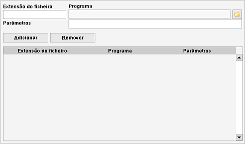
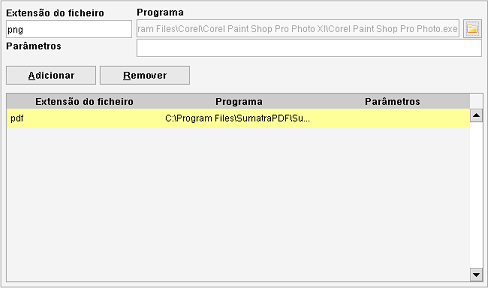
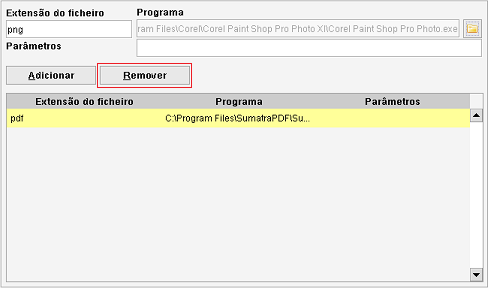

Associações de ficheiros
Caminho de menu: Definições > Definições > Associações de ficheiros
As associações de ficheiros são usadas para abrir/executar um ficheiro (através do menu que aparece com o clique do
botão direito ou usando o camo Ficheiro nos formulários de item). Por
predefinição, o Data Crow tenta encontrar o programa específico do ficheiro. Caso isto falhe (ou se quiser alterar
este comportamento), pode definir aqui o programa a usar com tipos específicos de ficheiros.

Adicionar uma associação
Escreva a extensão de ficheiro (sem ponto; não ".MP3" mas sim "MP3") e selecione o programa desejado
clicando aqui  . Este ícone abre o explorador de ficheiros.
Navegue até ao executável do programa e clique em Abrir.
. Este ícone abre o explorador de ficheiros.
Navegue até ao executável do programa e clique em Abrir.

Uma vez introduzida a extensão e o programa para a gerir, clique em Adicionar para a tornar ativa.
Remover uma associação
Clique na associação de ficheiro na tabela e clique em Remover.
